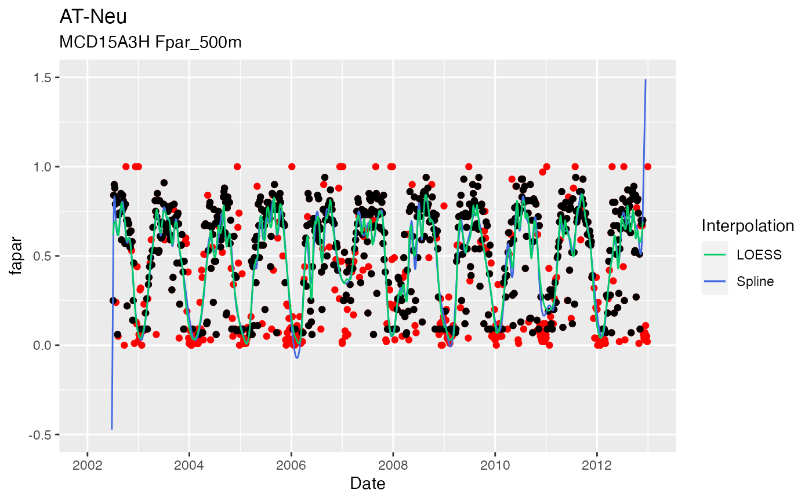
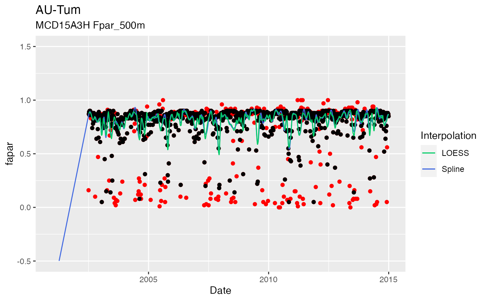

Interpolation of MODIS data
Beni Stocker
Source:vignettes/modis_interpolation.Rmd
modis_interpolation.RmdDefine sites
use_sites <- c("CH-Dav", "AT-Neu", "US-MMS", "AU-Tum")Define settings
- Data product:
"modis_fpar": MODIS collection 6, MCD15A3H, bandFpar_500m - Interpolation methods: LOESS spline
(
method_interpol = "loess")
settings_modis <- get_settings_modis(
bundle = "modis_fpar",
data_path = "~/data/modis_subsets/",
method_interpol = "loess",
keep = TRUE,
overwrite_raw = FALSE,
overwrite_interpol= TRUE,
n_focal = 0,
network = "FLUXNET"
)Get data
df_modis_fpar <- ingest(
siteinfo_fluxnet2015 %>%
filter(sitename %in% use_sites),
source = "modis",
settings = settings_modis,
parallel = FALSE
)## Number of available pixels: 1## Averaging across number of pixels: 1## loess...## spline...## linear ...## sgfilter ...## Number of available pixels: 1## Averaging across number of pixels: 1## loess...## spline...## linear ...## sgfilter ...## Number of available pixels: 289## Averaging across number of pixels: 1## loess...## spline...## linear ...## sgfilter ...## Number of available pixels: 289## Averaging across number of pixels: 1## loess...## spline...## linear ...## sgfilter ...Plot
Define a function to plot the data.
plot_fapar_ingestr_bysite <- function(df, settings, sitename = NULL){
if (is.null(sitename)) sitename <- df$sitename[[1]]
ddf <- df %>%
pivot_longer(cols = c(linear, spline, loess, sgfilter),
names_to = "method",
values_to = "modisvar_interpol")
gg <- ggplot() +
geom_point( data = df, aes(x = date, y = modisvar), color = "red") +
# geom_point( data = df, aes(x = date, y = modisvar_filled), col = 'blue') +
geom_point( data = df, aes(x = date, y = modisvar_filtered), color = "black") +
# geom_line( data = ddf, aes(x = date, y = modisvar_interpol, color = method)) +
# geom_line( data = df, aes(x = date, y = linear, color = "linear")) +
geom_line( data = df, aes(x = date, y = spline, color = "Spline")) +
geom_line( data = df, aes(x = date, y = loess, color = "LOESS")) +
# geom_line( data = df, aes(x = date, y = sgfilter), col = 'green') +
labs(x = "Date", y = settings$varnam,
title = sitename, subtitle = paste(settings$prod, settings$band_var)) +
scale_color_manual(name = "Interpolation",
breaks = c("LOESS", "Spline"),
# breaks = c("linear", "spline", "loess"),
# values = c("linear" = "red", "spline" = "cyan", "loess" = "blue") )
values = c("LOESS" = "springgreen3", "Spline" = "royalblue") )
ylim(0, max(df$modisvar, na.rm = TRUE))
return(gg)
}AT-Neu
plot_fapar_ingestr_bysite(
df_modis_fpar$data[[1]],
settings_modis
) +
labs(title = df_modis_fpar$sitename[[1]]) +
ylim(-0.5, 1.5)
AU-Tum
plot_fapar_ingestr_bysite(
df_modis_fpar$data[[2]],
settings_modis
) +
labs(title = df_modis_fpar$sitename[[2]]) +
ylim(-0.5, 1.5)